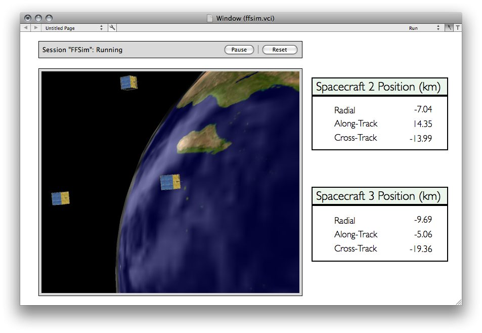

Note: This demo is only supported for Intel-based Macs.
This demo shows you how to interface VisualCommander to a simulation running in Matlab/Simulink. The simulation in this example includes 3 spaceraft flying close together in low Earth orbit (LEO). Their orbits are initialized using the Spacecraft Control Toolbox - Formation Flying Module so that they orbit the Earth in a projected circular formation. This formation is such that the spacecraft rotate around in a circle once per orbit, with a radius of 20 kilometers.
The screenshot below shows the interface window.
Press the configure button at the top to configure the data source. This pulls up the Matlab Data Source configuration window.
Click on a link to learn more.
For this demo, a data source is included that is already configured for you. First press the "Load..." button and choose the vcconfig.vcmsc file (located in the same folder as this interface file, ffsim.vci). There is no need to make changes. Just press the "Send Configuration" button to start running the simulation. The status will display in the session manager window at the top of the interface window. First, the Matlab process will be started, and the status will indicate "Initializing". Next, the simulation will begin to run and the status will change to "Running".
To view the spacecraft in orbit, click on the orbit display and press the "s" key to switch to the spacecraft view. There are 3 spacecraft in orbit, but you will not be able to see them all at first because they are too far apart. Use the "B" (capital B) key to make the spacecraft appear Bigger. As the spacecraft gets larger, you will have to continue to zoom out using the scroll wheel of your mouse. Soon you should see the other spacecraft appear alongside the spacecraft in the center of your screen. You can switch to the other spacecraft by pressing "s" again. Press "e" to switch back to the Earth view.